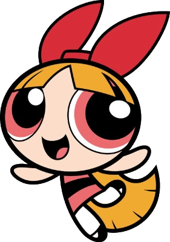
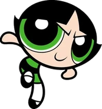

|  |
Blossom is one of the three main protagonists of
the animated television series The Powerpuff Girls,
along with her sisters Bubbles and Buttercup.
She's the Commander and Leader; she's the bright but
egocentric leader of the superhero trio (Wiki, n.d.).
|
Blossom has long, fiery red-orange, hair with a
triangular part and bangs and pink eyes. She wears
a pink dress that has a black stripe in the middle
with white tights and black Mary Janes. She has a
red bow on the top of her head and a heart-shaped
hair-clip that can be seen from behind. (Wiki, n.d.).
|
 |
Bubbles is one of the three main protagonists of the
animated television series The Powerpuff Girls, along
with her sisters Blossom and Buttercup. She is the Joy
and the Laughter; she is the emotional glue of the
superhero trio. She is the "sugar" ingredient of
the three.(Wiki, n.d.).
|
Bubbles is portrayed as having blonde hair in two pigtails
and a neat, curved fashion and sky blue eyes. Her dresses
are sky blue with a black-centered stripe and she wears
white tights and black Mary Janes.
|
|  |
Buttercup is one of the three main protagonists of the
animated television series The Powerpuff Girls, along
with her sisters Blossom and Bubbles. She's the Toughest
Fighter; she's the bravest, most headstrong of the
superhero trio(Wiki, n.d.).
|
Buttercup has short black hair in a flip with a small
triangular part on her forehead. She has lime green eyes
and dresses in a lime green dress that has a black stripe
in the middle of it. Buttercup also wears white tights
and black Mary Jane shoes with her dress (Wiki, n.d.).
|